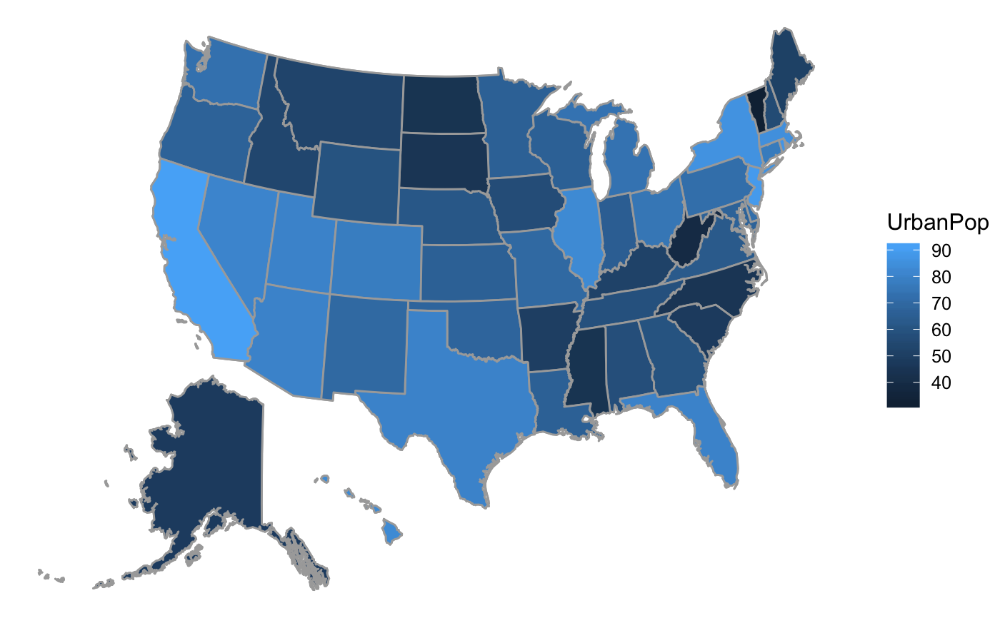

mUSMap takes in one dataframe that includes information
about different US states. It merges this dataframe with a dataframe
that includes geographical coordinate information. Depending on the
arguments passed, it returns this data or a ggplot object constructed
with the data.
mUSMap( data = NULL, key, fill = NULL, plot = c("borders", "frame", "none"), style = c("compact", "real") )
| data | A dataframe with US states as cases |
|---|---|
| key | The column name in the |
| fill | A variable in the |
| plot | The plot desired for the output. |
| style | The style in which to display the map. |
USArrests2 <- USArrests %>% mutate(state = row.names(.)) mUSMap(USArrests2, key="state", fill = "UrbanPop")#>